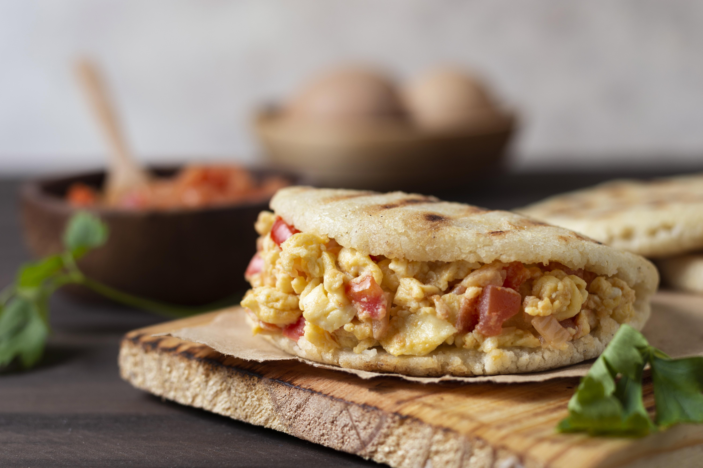

Home
Colombian Arepa de Huevo

Picture powered by Freepik.com
Description
This is a famous breakfast or snack food from the Caribbean coast of Colombia. It's a fried corn cake (arepa) that is split open, filled with a raw egg, and then fried a second time, resulting in a crispy arepa with a perfectly cooked egg inside.
Ingredients
- 1 cup of pre-cooked white corn flour (like Masarepa or Areparina)
- 1 cup of warm water
- 1/2 teaspoon of salt
- 2 tablespoons of vegetable oil (for the dough)
- 4-6 large eggs
- Vegetable oil for frying
How to prepare?
- Prepare the arepa dough: In a bowl, combine the corn flour and salt. Gradually add the warm water and the 2 tablespoons of oil, mixing with your hands until a soft, uniform dough is formed. Knead for a minute or two. The dough should not be sticky. If it is too dry, add a little more water; if it's too wet, add a little more flour.
- Form the arepas: Divide the dough into 4-6 equal portions. Roll each portion into a ball and then flatten it into a thick, round disk about 4-5 inches (10-12 cm) in diameter. Smooth the edges with your fingers.
- First fry: Heat enough vegetable oil in a deep frying pan to reach a depth of at least an inch (2.5 cm). The oil should be hot but not smoking (medium-high heat). Carefully place the arepas in the oil and fry them for about 4-5 minutes on each side, or until they puff up and are golden brown. They will be cooked on the outside but still soft inside. Remove them from the oil and let them cool slightly.
- Fill with egg: While the arepas are still warm, use a small, sharp knife to carefully make a slit on one side of each arepa, creating a pocket. Be careful not to cut all the way through. Gently crack an egg and pour it into the pocket of the arepa. You may need to use a spoon to help it go in.
- Second fry: Carefully return the egg-filled arepas to the hot oil. Fry them for about 3-5 minutes, flipping once, until the arepas are a darker golden brown and the egg inside is cooked. The egg yolk should be firm but not overly hard.
- Serve: Remove the arepas de huevo from the oil and place them on a paper towel to drain excess oil. Sprinkle with salt and serve immediately. They are best enjoyed hot.